Advanced Building Revue 12: Overflows III
Let me introduce you to the third part of the Overflow series of ABR, in this article I aim to note the most interesting innovations to overflow construction which are not described in the previous articles. Also you will be able to read about some less overflow related things, but vital for general building. The article is not sorted chronologically, I am just going to describe a few concepts of designs, and sort them by complexity or just by how I think it is practical to build such an overflow.
The new most notable features I will present is the combo-signalled reverser and techniques of high throughput overflow stations.
I will of course not repeat many things, especially roles of each component in overflow stations. Therefore I strongly recommend to read ABR04: Overflows and ABR08: Overflows II before reading this one. I also did not mark the images with colours etc as much as I did previously, simply because recoznizing these should already be piece of cake if you want this article to be anyhow useful for you.
![[OverflowsIII]](https://dl.dropbox.com/u/20419525/ABR12_intro.png){kind=link}
Note:
Most overflows will not work without setting yapf.rail_firstred_twoway_eol = 1
for more info see relevant wiki page.
Attached savegame
As always, I add a savegame along with overflow article. r24349, newbridges from the GRF pack, and NUTS 0.2.1 from online content.
Example overflows
Figure A: The basic 2-platform overflow

Once upon a time, the norm of overflows has gotten a new addition – that every depot should be hidden for the pathfinder. That basically meant that every overflow requires having a reverser, which basically eliminated many of the compact, super simple designs, and the design above started to dominate as it is trivial to copy.
While this thing has quite a few flaws and is severely slow, it is usually enough for primaries if you need the overflow for them. (only in cases you really need to keep yourself 100% sure that you will not get a backlog of trains just because of too many trains waiting for cargo; or in case you use conditional orders)
The design lacks two main things, first one is a prio for incoming line, that entering trains can be blocked by exiting in case of terminus station, and obviously a slow depot. However if we fix those things, we obviously do get a proper overflow, but have to sacficice some space to do that, which can not always be the most convenient thing to do.
Figure B: Adding prio for incoming line
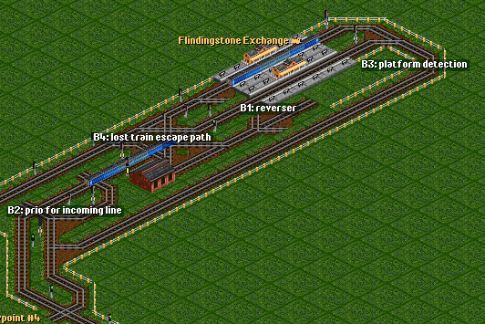
While this already tries to reduce the stress on the incoming line, the total low throughput remains. The thing that slows the most is the depot, especially with longer trains. So we can just put it in a separate place. Another thing which can be elsewhere than in the main X is the reverser.

Figure C: Depot/reverser separation
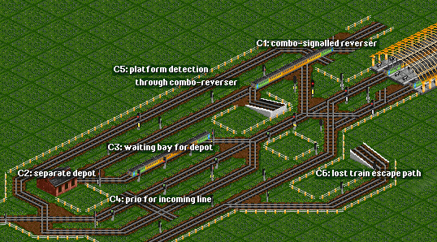
Now we have a solid overflow station with separate depot and reverser. Most key points are: C1: The combo-signalled reverser is a technique by which we do not detect the reverser as a free platform in case it is empty, but we do allow the station to have entry signal and wait for the reverser to clear in case there is a train at the moment. C3: There must ALWAYS with no exceptions be waiting bay(s) behind the depot. C6: EVERY terminus station with overflow MUST have lost train escape path.
This station already works fairly well but when throughput increases, the „X“ of the terminus itself becomes a bottleneck sooner or later. We can break this issue with 2 solutions, either we simply turn the station into ro-ro (then we do not even need C6), or we just make the station later with turning the current platforms into waiting bays, and place platforms afterwards.
Also – I have not mentioned it earlier, but – the X makes the overflow station break in case the exit jams up. For example if your SL exit jams, and your trains block the exit. In such case trains will not be able to enter the overflow and just continue the jam. It is often useful to prevent this from happening, so the overflow works under any circumstances, providing even more safety.

Figures D and E: Getting rid of X by waiting bays or roro station
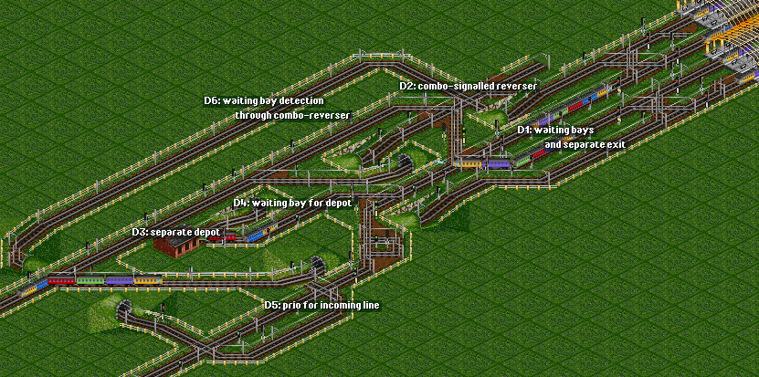 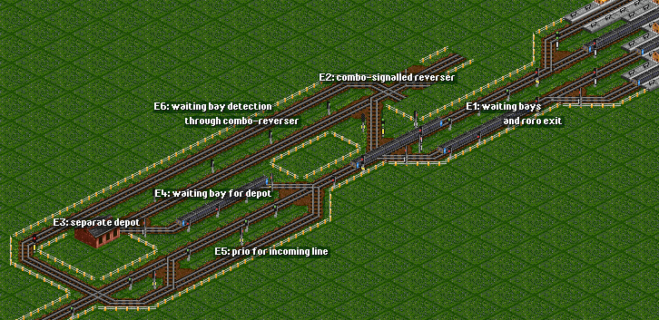
We improved the throughput again and either of these stations should work even for 2295 primary (I think). The only further improvements we can do is more expandability, and finding designs for a lot more throughput – like for secondary industries.


Figure F: 2-line station, diagonal design

The already classic design for a LL station, it appeared it many of our games already. The way how it works is simple, trains pass around waiting bays which they attempt to join as soon as they can. In case they fail they go to overflow. The overflow release is specific by sequentially detecting each line and waiting bays on it, similarly to a prio. Therefore the train looks if there are any trains coming towards a platform, and if that platform is empty. If there are no trains coming and platform is full, it just detects the next platform, etc.
A thing to note here is signalling of the depot. Sometimes it can happen that trains start stacking up in the overflow line in front of the depot. In that case we want the depot to give way to the incoming overflown trains, and then detect the waiting bays of course. That is done simply to reduce the amount of trains going through the slow depot. This obviously requires the depot to be conditional, as described in previous articles.
The station is best built with the main part of incoming line being diagonal because diagonals give space for the penalty PBS signals. The design also works for not-diagonal layout, but not as well with unless there is at least 4 line entrance – then there is space for the PBS also with the not-diagonal layout. However with that many lines (and likely that many platforms), there are better designs to build due to reasons below.
When it comes to downsides of this station, the injection from overflow could become too slow with increasing platform/incoming line counts. That happens simply due to the way how platforms are detected and could be overridden simply by making different less strict, but less precise detection (like presignal bypass-ish). Or there can be made a completely different design of the station which shortens the detected area on the incoming line.
Figure G: Release to X
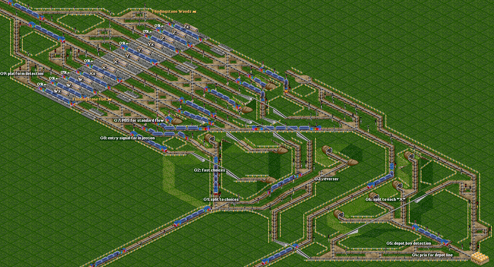
This design is fairly different to all of the other overflows. The main deviation is the release – we do not directly give way to incoming trains, there is not even any traditional priority for them. The X has PBS signals for incoming trains, and entry pre-signal for overflow injection. The platforms are made in such way that 2 of them have reversed 2way PBS to make them as a separate signal block, and the third platform is let to get the signal going through it. The third platform also has a penalty station to make trains join the separate signal block platforms first.
The entry signal works because it is there only for detecting the exit/combo signals in front of it.
All in all, the condition for train release is: If there is one of the two separate signal block platforms empty, and the platform through which the signal goes is empty, a train can be released from the overflow. This injection does not happen very often, but seems to be sufficient, as tried in psg219 and similarly in psg230. The conditions are weird and not very universal so lets try to change that.

Figure H: Different releases
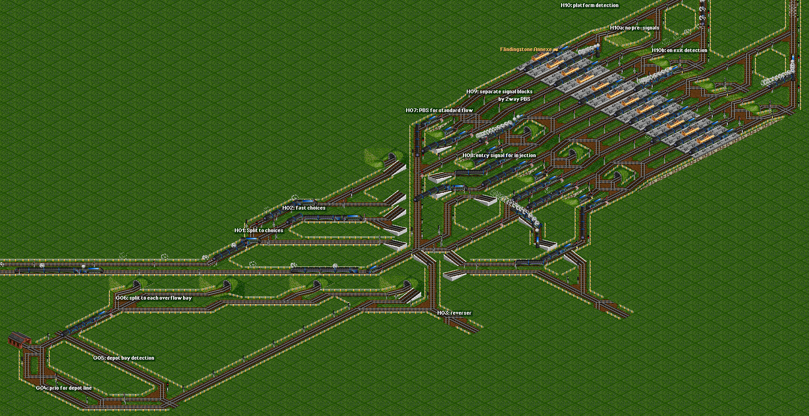
This is an attempt to find a different solution which would not provide the strange release conditions of which exact platform should be full and which not. I can think of 2 options how to do this:

H10a: no pre-signals
The block signals give way to the main flow trains only in case there is a train in the block already, so only a PBS signalled train can access the block. This solution is very basic and can slow down the incoming line by forcing too many trains through overflow as too many trains come out of it.
H10b: pre-signals on exit
This makes the entry signal wait until there is at least one platform free and the exit is free. Then it lets the train into the block, and it is taken care of by the PBS pathfinding. The important thing is that it not only waits for the platforms, but also the exit. Detecting the exit means that unlike the option H10a, trains coming from main flow (1way PBS) do get the opportunity to go into the platform first, because the platform is free just a moment before the exit is free, too.
This release condition is not too strict but should not inject in completely inappropriate times and when the station is under a lot of stress, the main flow trains should always be given way to.
Figure I: normal station with injection for each incoming line
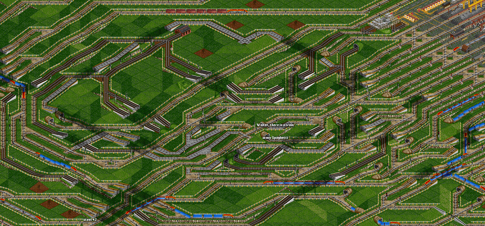
Note: The amount of rails is a bit of a mayhem, so I tried to make it easier to read by making logic lines maglev, overflow lines univ rail, and incoming line is monorail. (from psg233)
Another option how to make the overflow is the same split as before, but with the difference that the release is not anyhow influencing the station design. Trains are simply injected in the other incoming trains, just like multiple single-line injections, as seen in figure F. There are probably more and more options how and where to release trains, but the logic seems to be mostly similar then.

Other stations from our games
Loop overflows on drops
A valid form of providing choices for trains to choose any platform is not always only giving direct choice, but it could also be „if my line has no free platform, I join another“, which is how the loop overflow on drop works. Loop overflow obviously does not include depot, so any release logic is not needed. The overflow should even be given prio just for the length of one TL, to prevent possible deadlocks.
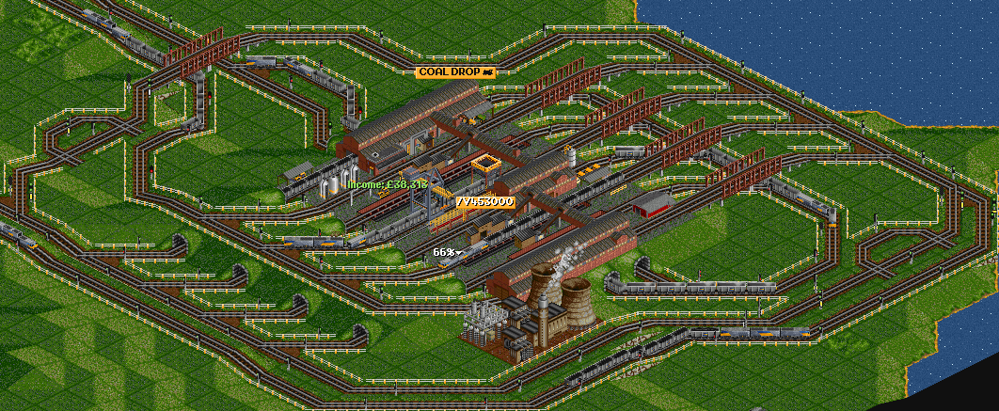
Here is a simple station for 2 line drop station with loop overflow.

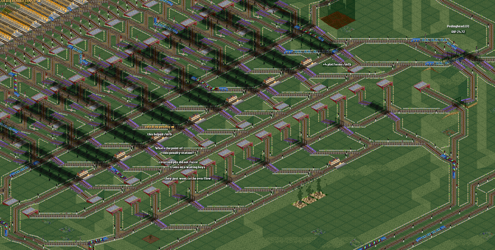
And here comes a bigger option for 4 lines. Of course there are various ways how to do it, but the idea of the loop stays.

Combined drop&pickup stations
Stations which combine drop and pickup are usually built with an overflow to not jam the nearby drop. Combining drop and pickup can safe space as the stations are close together, but a problem usually arises when expansions are needed.
Generally, drop comes first in order to get these trains out of the way so they do not get detected by injection logic etc.
Because the drop is usually not ended with a stopping signal, it is often vital to add a loop overflow for the drop to not make drop trains go through pickup accidentally in case drop has no free platforms.
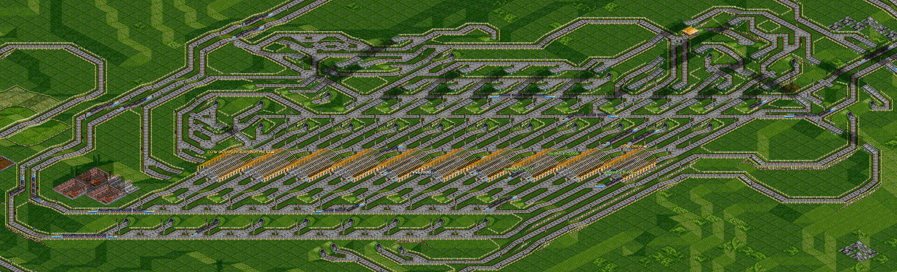
Typical combined drop and pickup station with overflow. From psg 220.

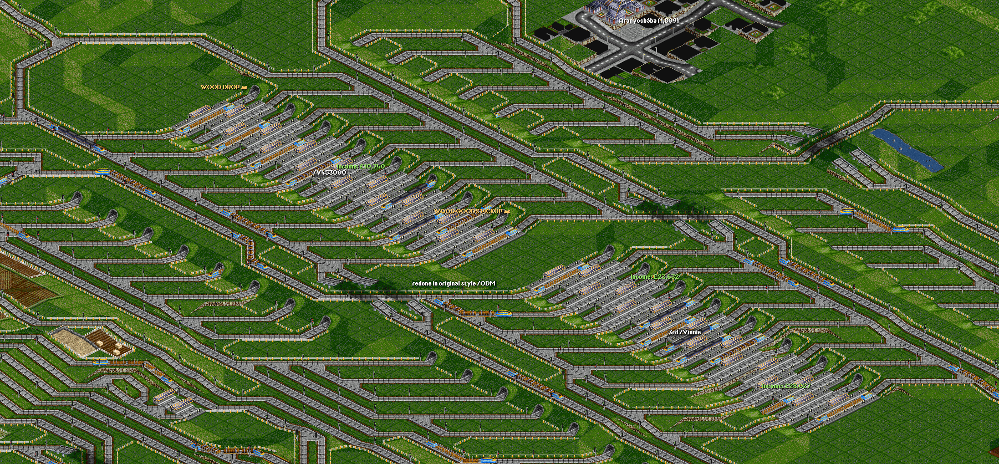
It is also possible to rely only on loop overflow. Not only for the drop, but also for the pickup. Of course does not provide the endless buffer for trains, but it should suffice as well. From psg220.

Conclusion
Overflows are a very useful tool to make sure your network can work without jamming due to stupid reasons like trains from pickup blocking a drop. On the other hand there are many cases when an overflow is not really needed, mostly in case of primary industries. (Unless you play alone and want all primaries serviced perfectly but you do not want to oversee train counts in all stations at all times, and want to focus on other things like expanding and taking care over the mainline parts of network. In a psg-styled game, you usually have a lot more production than you can transport anyway.)
This article has shown mainly some of the ways how to make a large scaled overflow, which are obviously to be used on secondary industy pickups, where they are generally very convenient.
Once again, thank you for reading and I hope the article was useful for you in any way. Please pay special attention to not forgetting lost train escape paths on terminus stations, and building waiting bays on the depot exits.
Thank you for reading, V453000
Categories: Gameplay, ProZone, Public Server
V453000 July 1, 2012 18:36
Alright, if I put our nice little hate argument aside, lets talk about the objective reasons:
Firsly, lets define what an overflow is:
An overflow station is a completely normal station with endless train buffer. That means if you imagine 2 stations, one with 3 tiles of straight line in front of it, the other with 300 tiles in front of it, the difference is the same. In regard to trains which actually run on the network, if a station uses XX trains, it still does output YYcargo/month and appropriate amount of trains, rest is waiting trains – no matter where they stand.
Secondly I would like to express that the style how we play today is to focus on how to build a hub better, how to expand points of the network, and so on. Taking care of trains themselves as in where exactly do they go, comes after point one. Constantly checking if there arent too many trains anywhere does not require any knowledge and is just slave labour.
Therefore, we should be able to state that an overflow station simply cannot hide away any issues on the network. Simply because it works just like a normal station.
Therefore a point of “less caring about the network” is right out, especially because overflows are there so we can focus more on building of the network (instead of checking train counts). And also because if you have a station full of loading trains, your trains come very periodically – anytime there is cargo available. If there is a jam anywhere on the network, train count needed for the route automatically increases – therefore makes the jam even worse, which means that the network must run perfectly smooth. (Therefore we have to care _more_ about the network)
I also think that it is the most reliable tool to combat wave traffic. Simply because the periods when trains are released from the station are very consistent – based on the production, not on already created waves of trains. (This applies only for secondaries as primaries always make waves – simply because in most, if not all, games we never pick up all available primary cargo, therefore overflows would not affect anything).
To conclude it, I think it should be obvious now that overflows do not influence the network itself that much, given that the network works properly and smoothly. And even if it does not, and it needs to be rebuilt/upgraded, then overflows make it easier to get the flow back to perfect instead of having waves. Not to mention the tiny point that trains do not block tracks when you do not want them to during rebuilds.
At the same time, I do not see a single point which would speak against the overflows as in that they would either do anything directly bad, or harm the building style and the way how we actually play.
I do not say overflows are required, or becoming a standard, but I say that they can be very convenient to build, are fun to build, add a new “discipline” to the game, and are a cute way how to fiddle with signals and signal logic. Therefore I reject any negative feedback with style “and this is why I build less”. And if you really do, sorry that I dare to build anything like that, because I am probably going to keep on doing that due to all the points mentioned above in this post.
If you can provide any arguments which would prove me wrong in any of the points above, please do note them with proper explanation. Otherwise just saying I dont like it (which alone is obviously fine) with giving it as a reason why you are less active, is majorly offensive to me and feels like very unconstructive criticism. Sorry if I am being just an asshole but that is just how it feels to me.
XeryusTC July 8, 2012 20:57
So first of all, train management is not slave labour. It would imply that we own the humans doing it which is most European countries is not legal (it was legal up to 2008 in Britain for example, who else might have forgot to ban slavery legally).
Second, it just feels to me that you’re lazy if you don’t want to do train management. Sure it is a bit of a chore but it is a vital part of managing a network, after all it is what you build the network for in the first place. If you build overflows it is just the same sweeping the problem under the rug; out of sight, out of mind. In my opinion it is a vital skill to get train numbers right for a station, something which I’ve not seen in recent games, quite on the contrary actually: I have seen stations with 3x the amount of trains that were actually needed.
Now I know that you don’t see that as much of a problem because you are one of those people that just keeps raising the train limit until the network breaks at which point you either fix it or just cover the symptoms and archive. There are however people with weaker machines who also want to be able to play end game and for them keeping fewer trains is essential. We are an open community and everyone should be able to play.
The style we play games has never changed. It has always been about transporting everything on the map. The only difference that has changed between ye olde days is that we don’t have a hard train limit anymore (most players weren’t around at that time). You seem to think that building big is the primary point of #openttdcoop and should have precedence over everything else. That is not true, a network should run smooth at all times, that is what #openttdcoop is about. Sure overflows help with it but they do it in an inappropriate way IMO. They just hide the fact that there is a problem on the network and they do it in a similar way as two way signal choosers do, they cover up the symptoms half the network away.
If you really wanted people to learn to build properly then you should aim for simplicity and speed, not complexity. Overflows are so complex that in every game that I’ve seen them in that at least two of them get screwed up in such a way that they cause jams.
When I first joined #openttdcoop there was a game which was very heavily reliant on overflows, one even had a sign saying “If there are no trains here then there is a jam somewhere”. The problem with the game was that the main stations were just too slow in handling the traffic. That is where the problem of overflows lies, they cover up the actual problem by hiding the trains.
Also, if you have a proper and smoothly working network then why do you need overflows? A smooth network means that no trains need to wait (long) and are always on their way. An overflow really seems to be superfluous in such a situation.
V453000 July 9, 2012 06:35
I just find managing train counts strongly repetitive and stupid (especially as your goal states the aim is to transport everything), but that doesn’t matter. I am not even saying I do not want to do it – I say I want to be safe from having problems from too many trains. Therefore obviously yes, putting it a lot less importance, by being able to focus on building.
By the way you know very well what I mean by slave labour so your comparison to real slaves will be happily ignored because I really do not know if that is a serious comment or just having nothing to say.
What I am missing in your comment completely is what exactly is actually that problem that you are talking about on the network. What exactly is it?
There is exactly as many active travelling trains on the network itself, there are no jams hidden anywhere. Just the same amount of trains is running on the network as there would normally be if the station was serviced properly. What is that magical rug – simply waiting space?
As I already described in the comment above, the overflows do not hide any problem on the network and unless you give me exact arguments why they should, I refuse to argue about that anymore. It is just spot for waiting trains, nothing more. Note that 3 times the amount of trains required for a station is not a problem, that is just excessive waiting trains – the running train count is unaffected, therefore the network neither.
Therefore the only extra trains are waiting trains, which as you well know eat barely any computing power.
Also, raising the amount of trains and expanding the network really seems to be the main and most important part of our games and I do not really see why should that be any different, building a million simple lines gets repetitive over time to say the least, solving traffic problems not.
Things do not have to be simply big, but they should be getting expanded, perhaps even multiple times, otherwise we could build a game and instantly close it once there are no jams, which would get even trivial in my opinion.
Also, for lower cpu usage there are smaller maps, not less trains.
People learn by building things, and the more complicated things they get used to build, the faster they learn. And also note that some basic overflows are far from complex. In fact I would say that overflows could theoretically even help with learning as they stress a lot of key things to learn, like working with the train length, working with signals or providing required throughput. But I find this idea of changing learning proces strongly hypothetical. On pretty much every map are smaller constructions or spots which are easier to build.
It was a great pleasure to read your story about the one magical sign in a game, however strange things are that I do not see how is a main station not able to deal with the traffic related to the overflows at all (as it does not influence the amount of running trains on a smoothly running network), not to mention that there are often signs saying various things on the map, not necessarily being true or very thought through.
If there is a station which jams, it is not a smoothly working network anymore, and not because of overflows but simply because there is either too much traffic or not enough throughput at the station.
First problem is, how do you get a smoothly working network. As a smoothly running network I would imagine not only a network without jams but also without train waves. And as you well know, there is wave traffic in every game, every game gets some rebuilds, trains stop, create waves, and so on. I think that making overflows, and ensuring perfect servicing of the station, gets rid of these waves as it spaces out the trains depending on the production, and even if some waves occur for example due to constructions on the network, the waves get fixed automatically again.
It is not only about being useful in the super-ideal case, but also about actually even getting there.
The network must run smooth especially with overflows, yet they help especially with wave traffic, as I described in the previous comment.
An overflow can for sure seem superfluous in situation when there is too much cargo to be transported for the network to handle. But as even your goal states, the aim is to transport everything so such situation should not happen. (I know it happens in every game, but we should connect only amount of industries we can transport perfectly)
Troy_McClure July 18, 2012 20:06
By adding this line, I hope I will be able to really submit this, since it isn’t really working the last couple of times :S
The point with overflows is they do not really solve the underlying problem as to why you use them. One reason why to use them is to create “growth” trains. In (I hope) everyone’s opinion, this is just lazy: why would you create trains you don’t need yet? However, lazy isn’t necessarily a bad thing. As pointed out: the tedious labour of checking stations to update the number of trains isn’t really exciting to do, but some think it’s part of the game. Bypassing that issue by spamming (I use the term loosely here) a lot of trains is a way of resolving it. Overflows enable and encourage this behavior, because the overflow (into a depot) forces the trains into a depot. The depot in OTTD is essentially a magic bottomless bag to put things in and pull things out when you need them, with the convenient condition that it only takes up a one by one block. I could say that’s cheating, a flaw in the system, but that’s just how it works. There’s no sense in trying to blame the system.
Whereas the first reason has to do with trains being created in the depot (and staying there), a second reason has to do with trains coming in the depot. There are several underlying reasons why trains go into a depot. I will go into some of them, since I don’t know all of them: A first underlying reason: lost trains, but the previous “standard overflow” already had an escape route for lost trains, so does this new one. The overflow does nothing to detect lost trains, so the underlying issue isn’t solved, but the problem might be resolved by it (trains can find a path after leaving the depot). The problem can be trivial too: connecting a new drop, or reconnecting a hub. Another underlying reason is a faulty station: when a trains enters a depot, when there is in fact one or more platforms open, that is a faulty station.
Yet another underlying reason is the wavy behaviour of trains, if anything, this is the main argument for not using overflow depots (but also for building them): they don’t solve the issue why the flow is wavy. The wavy behaviour can be caused by a (combination of a) number of things: rebuilds, infrequent delivery of industries to stations, or infrequent delivery of subsidiaries/primaries to secondaries, trains stops, replacing trains or sometimes bad timing of industries to SL, or SL to ML. At this time, I wish to refer to lean manufacturing/Toyota Production System.
There are three groups of elements in which it is possible to reduce costs. However, one shouldn’t read costs as money, but in general a commodity, a scarce item or service, people need or want. Costs in this perspective might be space (there’s only a limited amount of space on a map) or (lack of) network capacity or CPU. You’ll want to reduce costs: reduce the amount of space you require to build a structure, reduce the lack of network capacity, or reduce the amount of CPU needed. The three groups mentioned are muda, muri and mura. Muda essentially has to do with reducing the time the product (train) isn’t adding value (which is part of why I don’t want to keep trains in stock in depot, on the other hand, as V said, they’re just waiting, not taking up any space, because of the magic bottomless bag. It is also a reason for me to like refits :)). Muri has to do with not exceeding the physical capacity of a system, or subsystem. The last thing, mura, has to do with reducing “unevenness” in a process. Without much difficulty, we can translate this to “waviness”. It might seem a bit easy to take “waviness” for granted and make overflows and that will be it. However, small buffers are in fact a valid way of countering unevenness (and even part of solving it), leveling the waves out. Part of the underlying reasons why there are waves should however be investigated. If you don’t want any waves at all, you should leave everything alone: no rebuilds, no train stops, no new stations, no replacing. Let’s not do that ;), it would take all the fun out of building a network, if we can’t do anything to it.
As for gameplay: simple versus complex, I have this to say. One should really get the hang of building simple and aiming for speed before adding complexity. It is by aiming for simplicity and speed that you understand why complexity is needed. For instance, you’ll need to work with signals first, before you can make a station with one line ending on multiple platforms. You’ll need to work with the simplest signals first (block signals) to advance to more complicated signals (PBS, and later pre-signals). You’ll need to have a jam first, to know why you need double line (LR). You need to have injection issues to know why you’d need prios. And you need to have all of those things to know why you’ll need to separate between a line to a station, a SL or a ML. Every level adds complexity, but (re)solves the problems of the simpler level below it.
Concluding: for myself, I don’t see the need for more complexity and building overflow stations with distant empty platform detection, combined with incoming train detection. But when I do see the need, I will be able to find and apply those overflow stations. In general: overflows can cover up some issues, part of which is laziness combined with convenience, part of which might be bad building, and part of which is interfering with the network by players. The first thing is not really objectively debatable, the second thing can and should be detected otherwise (since it will not be covered up completely) and the last thing is unavoidable (since building and interfering is what the game is about). I hope this adds something to the issue at hand.
RB98700 July 20, 2012 05:43
For me, overflows have only one reason to be used: to keep the station connected to it always full of loading trains.
This helps maintain a good service evaluation, with a smaller station.
In my experiences in play, I realized that a station with eight bays and an overflow can easily handle a large production, because with standard set of trains/stations, a station loads up to at most four trains at a time.
So far, I could not see all of this that both parties commented. Because, with or without overflow: a badly made rail circuit, will generate traffic jams; a great rail circuit, full of trains will also create traffic jams.
**So, I still see the need to calculate and observe the amount of trains.
In my mind, the trains waves is almost totally and directly related to the random variation of the economy simulated by game itself. [Remembering that there is inflation in the economy, too.] In one month a station can produce twice [2X] that last month [X] and in the following month the same station can produce half [X/2].
How do I control this? 🙂
Also, slowdowns and “waitings” for space to access the a line can cause waves, from what I see in games so far. Because a number of trains can take more or less time to get his station, while it is receiving and storing the industry output to be loaded on the train.
** So in my mind, overflows do not solve completely the waves. However, they are good tools without a doubt.
Rodrigo Boechat [RB98700]
Troy_McClure July 20, 2012 23:27
Erm…
RB98700, from what I know, you’re not often or never on the Welcome Server, and probably not on the Public Server. That is not a bad thing in itself;)
However…
Your comments on your stations and the economy is giving me the idea you have an idea of what your talking about, but not a very good one. For example, this standard train set: is that the original OTTD train set, the remodelled set, or another set (tropic refurbishment set, NUTS)? Which wagons are you using when you say you need 8 bays? The amount of bays you need is related to the loading time of a wagon, but also acceleration characteristics for instance.
Furthermore, I know what you mean with inflation on economy (you say that on purpose to distinguish it from inflation on money), but -unless you’re using some patch- economies (primaries in ottdcoop-terms) will never grow with 100% a month, or shrink with 50%. (Perhaps not true for a very small primary, an 18 ton mine). How do you control it? Look here: http://wiki.openttd.org/Game_mechanics
It’s nice to see that you have some ideas on it, and are willing to respond. Because of that, I’d like you to visit the Welcome Server (or Public Server) once in a while. (you’re always welcome on the Welcome Server, unless you did a Really Bad Thing;)). Your comments on the subject are useless, however, for the ottd-veterans such as V453000 (For the record: I don’t consider myself to be an especially good player, certainly not in ottdcoop terms). Still, no need to be discouraged, visit the #openttdcoop Welcome Server, you might learn a thing or two and you might have some fresh ideas we could use.
V453000 July 21, 2012 10:53
Thanks for your attention and comments, I will try to reply to the 3 posts above ^ 🙂
I do not agree with everything what Troy wrote, but all of these ideas have some good arguments so I will at least respect these, but I will try to explain one thing, the waves. I already mentioned it in the irc, but:
Train wave means that there are several trains which arrive to the station together, leave it together, and travel together for the whole round, and then do it again.
– Typically this happens when any disruption on the network is made – as Troy wrote, rebuilds, edits, anything.
– Then the loading station starts generating extra cargo, as the trains which were expected did not arrive.
– When all of the trains arrive to the station together again, they just load all the cargo they can (in case there are not enough trains in total, there will likely be cargo available for all of the trains) and then leave all together again.
-> What overflow does is that it ensures to have a train always loading (unless the jam/rebuild is way too major). This means that there will not only never be that much extra cargo, but also that the train wave which comes will be disintegrated into the depot and re-ordered based on the primary output.
-> Of course, if there is a total network jam, overflows wont help anything there. But the point is that they will be able to bring the network back to the original perfect state without waves. All you need to do is have stations properly serviced. (They do not solve waves “themselves”. Your network has to work great, which is not easy.)
However, having stations properly serviced is not that simple. You need to either connect appropriate amount of primaries, or expand the network like crazy – or even disconnect some primaries to reduce the stress on the network.
So there still is a lot of management, just not exactly train count, but more like primary count translated into train count.
(This is to the note of RB98700 about the need of check train counts etc. … of course there is need to look over the network, but over something else.)
Note about industry productions: I think the x2 behaviour is for fluctuating economy, while we use the smooth economy.
And by the way Troy, RB98700 is a very valuable person on the Public Server. That you do not see him there (I havent seen you there in a long time in fact) does not mean he is not active there. He is not there for long, but is one of the better people to have around, so I would pass the notes about his lesser experience aside :P.
pietballas February 25, 2013 20:00
Hi
I tried this one “The basic 2-platform overflow” out in my game, but the train get stuck in front of the exit signals and don’t want to take the exit path to reverser, if i build the same on the save game attached it works perfectly, checked all the advanced settings between this save game and mine and they are the same. IS there some setting i’m missing.
even if i use any of the public save games the design works, i start a new game and the train get stuck, it’s pointing to my game settings 🙁
Thanks,
Piet
pietballas February 25, 2013 21:00
Hi
I manage to fined the issue, yapf.rail_firstred_twoway_eol was not set.
Thanks,
Piet